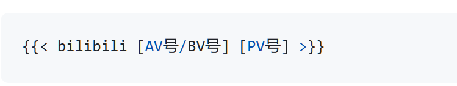
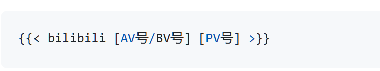

hugo框架的使用
Hugo 是目前最受欢迎的静态网站生成器之一，她能够快速构建含有某种主题的博客、个人网站、文档站点或企业网站，她内置支持 Markdown文件类型的文章。
如何使用 Hugo 创建个人博客
下面我将为大家演示如何使用 Hugo 快速搭建一个个人博客。
步骤 1：安装 Hugo
首先，你需要在你的电脑上安装 Hugo。Hugo 支持多种操作系统，包括 Windows、macOS 和 Linux。你可以根据操作系统的不同，选择合适的安装方式。
在 macOS 上使用 Homebrew 安装 Hugo：
|
|
在 Windows 上使用 Scoop 安装 Hugo：
|
|
在 Linux 上使用 apt 安装 Hugo：
|
|
步骤 2：创建新站点
安装好 Hugo 后，打开终端（Terminal），使用以下命令创建一个新的 Hugo 站点：
|
|
此命令会在当前目录下创建一个名为 myblog 的新文件夹，里面包含了 Hugo 的基础结构。
步骤 3：选择主题并安装
Hugo 有一个主题库，你可以选择一个喜欢的主题来快速美化你的博客。在 Hugo 官方网站或 GitHub 上，你可以找到成千上万的主题。
例如，使用以下命令来克隆一个主题：
|
|
然后，你需要在 config.toml 文件中指定你所使用的主题：
|
|
步骤 4：创建文章
你可以使用 Hugo 提供的命令来创建新文章：
|
|
这会在 content/posts/ 目录下创建一个 Markdown 文件，你可以在其中编写文章内容。
步骤 5：启动开发服务器
在本地开发过程中，你可以使用以下命令启动 Hugo 的开发服务器：
|
|
通过浏览器访问 http://localhost:1313，你可以预览你的博客，并查看内容的更新效果。
步骤 6：发布博客
当你准备好将博客发布到网上时，你可以将其构建为静态文件，使用以下命令：
|
|
此时，Hugo 会将网站的所有静态文件生成到 public/ 文件夹中，你可以将这些文件上传到任何静态网站托管平台，比如 GitHub Pages、Netlify 或 Vercel。
结束语
如果你是一名自媒体创作者，想要拥有一个快速且现代化的博客平台，Hugo 无疑是一个值得考虑的工具。你可以通过 Hugo 快速发布你的内容，专注于创作，而不必担心服务器、数据库等技术问题。
优化
插入bilibili视频
在想插入 B 站视频的地方使用 Shortcodes:
 

(AV 号不带 av/AV，BV 号必须带 bv/BV，PV 号控制分 P，默认为 1) 比如
或者